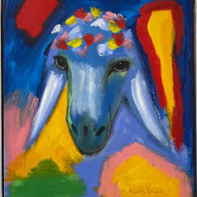

Music
Shepherd crafts emotional audio textures under the name Black Palette.
His soundscape blends ambient distortion, percussive hip-hop, and lyrical tension.
Ambient Distortion
Experimental hip-hop with atmospheric textures
2024.jpg)
Percussive Flow
Rhythmic patterns meet melodic chaos
2024

Lyrical Tension
Narrative-driven soundscapes
2024